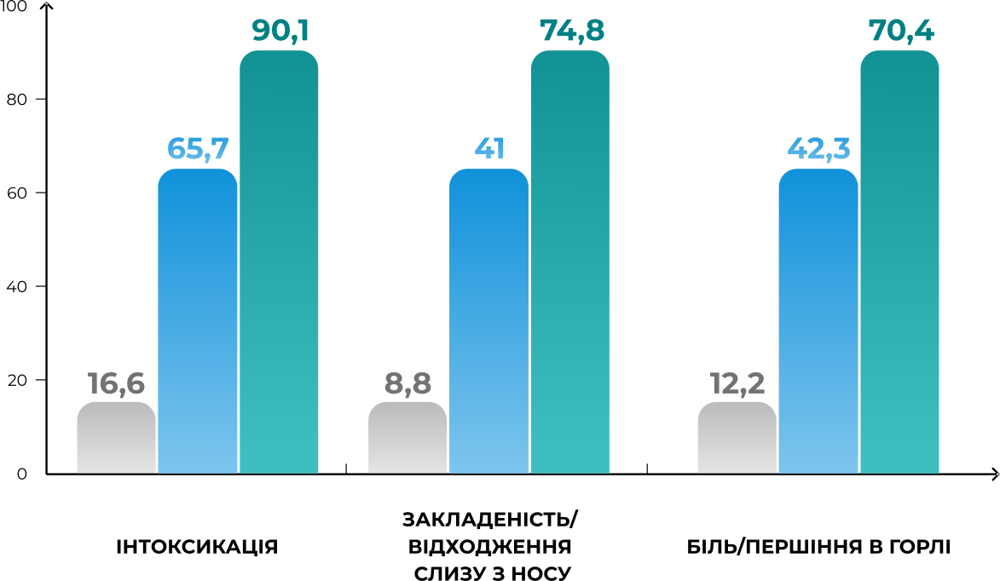

ЕРГОФЕРОН
Вже через 2 дні усуває симптоми інтоксикації у 65% пацієнтів,катаральні симптоми у 41%, що підверджено результатами
дослідження «Ермітаж»: 8 411 пацієнтів
ТРИВАЛІСТЬ СИМПТОМІВ ГРВІ, ДНІ


1-й день
2-й день
3-й день